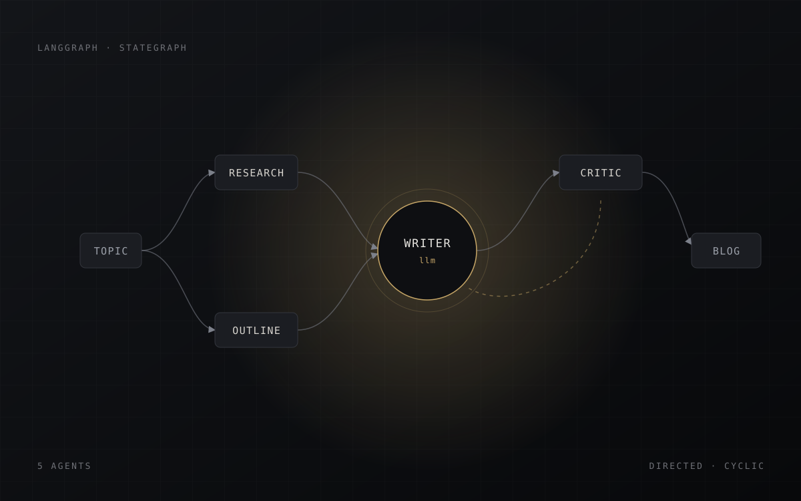

Final Year ProjectMulti-Agent Blog Generator
An autonomous multi-agent system that researches a topic, drafts, critiques and revises long-form articles. Five specialised agents coordinate through a LangGraph state machine, with retrieval grounding every factual claim.